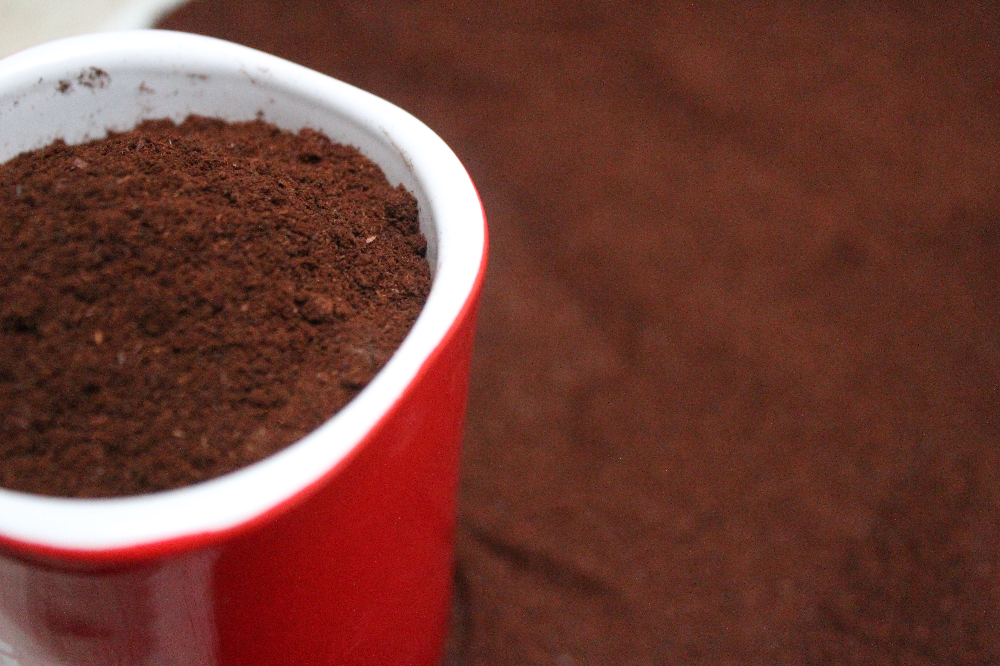

mejoremos la calidad de nuestro cafe
cafe organicamente de chiapas 100%
Nuestra Mision
Encontrar el mejor cafe de todos lados pq si auauaa
Nuestra Vision
Ser la pagina donde se encuentre el mejor cafe de tuxtla
plan cafetero
descubre el rincón de tu café favorito
Convierte cada momento oscuro en una oportunidad para compartir.
Los finlandeses se ganan el premio a ser los más fanáticos del café! Tomando más de 3 tazas al día, se calcula que beben casi 12 kg de café al año por persona
Brasil es el país que lleva la delantera mundial en ser el mayor productor de café, en el 2020, con más de 69 millones de bolsas de 60 kilogramos
Aunque suele ser una bebida que se toma en los desayunos, la mejor hora para consumir café es a partir de las 2 a 3 horas después de habernos despertado
El café es la segunda bebida que más se consume en nuestro planeta